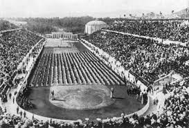
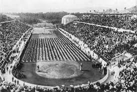
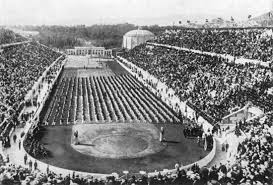

The first modern Olympics, held in Greece, demonstrate the increasing willingness the US had to get involved in foreign affairs.
Just as the US was becoming more involved in imperialism, so it was becoming more involved in foreign affairs (such as the olympics) overall.

 
